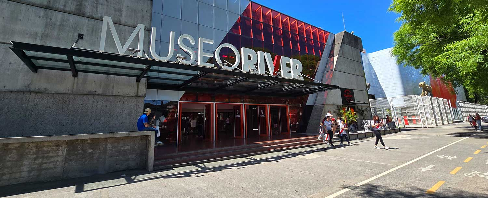
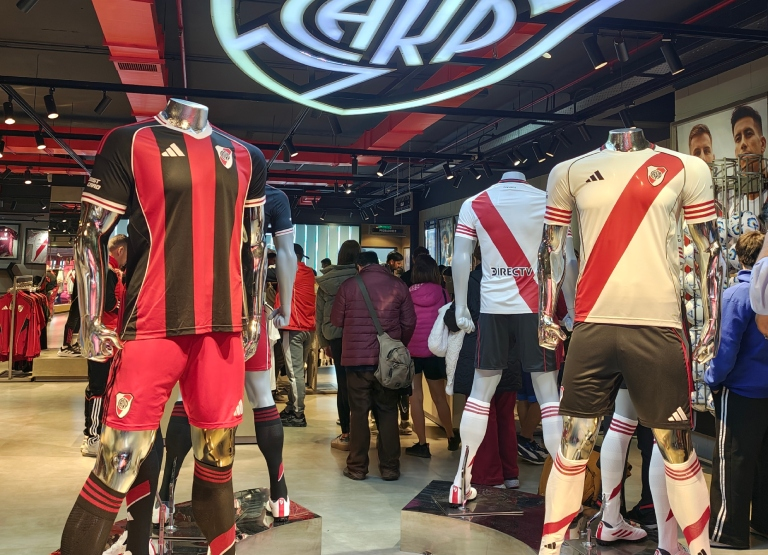
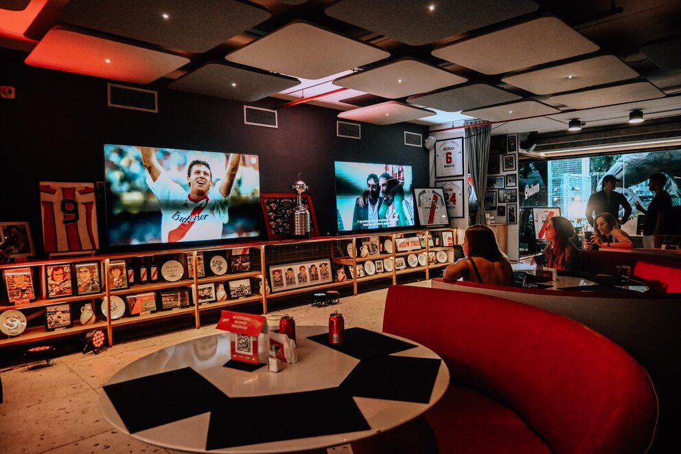

Argentina es de River
River Plate no es solo un club, es el movimiento popular más grande del mundo. Con millones de hinchas que llevan la pasión del Más Grande en cada rincón de Argentina, las filiales en el interior son un reflejo de esta enorme familia que trasciende fronteras. En esta página, vas a conocer donde se encuentran, las actividades que realizan y el impacto que tienen en cada comunidad.
¡Sumate a la historia de River en el interior del país!

Mapa del país
River esta en todo el país. Encontrá la filial mas cerca de tu ubucación y conocé sus actividades y viajes.
Sugerencias
Ir a la cancha no es solo ir a ver el partido, es una experiencia que se construye desde las horas previas. Estas son las mejores actividades para hacer el dia de partido antes de entrar a la cancha.
Museo River:
Considerado uno de los museos deportivos más avanzados del mundo, es el lugar donde la historia cobra vida. Desde el "Túnel del Tiempo" hasta las vitrinas con las copas internacionales, es una parada emocional necesaria para entender la magnitud de la institución. (Tené en cuenta que hay decuentos para socios y el día de partido tiene horarios limitados).

Tienda River:
Ubicada estratégicamente junto al museo, es el punto de encuentro para quienes buscan renovar el "manto sagrado". Aquí puedes encontrar desde la indumentaria oficial de juego hasta accesorios exclusivos que solo se consiguen en el club (Tené en cuenta que hay decuentos para socios y el día de partido tiene horarios limitados).

Bar glorias:
Situado dentro del predio, este bar temático te permite almorzar o tomar algo rodeado de reliquias y fotos de los máximos ídolos. Es el lugar ideal para entrar en clima mientras escuchas las anécdotas de otros socios (Tené en cuenta que el día de partido tiene horarios limitados).

Banderazo y Recepción del Micro:
Es el momento de máxima conexión entre la gente y los jugadores. Los hinchas se concentran sobre la Avenida Figueroa Alcorta o en el puente de la Avenida Cantilo para esperar la llegada del micro que traslada al plantel profesional.